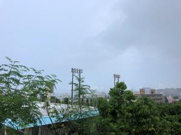

うるがいの話 ある日
最新: ノーベル文学賞との出会い
うるがいとは 前提知識です
カニの画像をクリックすると『うるがいの話』サイトを表示します
うるがい(ｳﾙｶﾞｲ urugai)とは、『もずくがに』の名前でとても大きくなります。
たながー（ﾀﾅｶﾞｰtanagaa）とは手長えびのことで、何種類かあり大きいのは車 エビぐらいになります。
ぶながー(bunagaa)とは、赤い髪の毛、赤い身体、そして身長は１ｍ２０ｃｍ ぐらい、川の蟹を食べているの目撃された。場所は沖縄県国頭郡大宜味村のと ある村僕の隣近所に住んでいる爺さんから、聞いた話です。
2021年09月03日 (金）
ノーベル文学賞との出会い
16:47

『黄金探索者』はロマネスクな筋立てを比較的明確に備えた小説であるが、一
般にル・クレジオの小説は、筋で読ませるものではない。『砂漠』の冒頭数十
頁にわたっ て延々と続く砂漠の行進の描写に音を上げたフランス人 を、訳者
は少なからず知っている。ル・クレジオを享受するには、反復・変奏の単調さ
から醸し出されるポエジーを、世界のリズムそのものに合体する昂揚の到来を
、 辛抱強く待たなくてはならない。(「訳者あとがき」より)
Ｊ・Ｍ・Ｇ・ル・クレジオというノーベル文学賞の作家の『黄金探索者』の本
の帯に書いてあった。うん、正しくこの通りだ、この前『砂漠』を読んだとき
まさしくこの通りの感覚に陥た、ノーベル文学賞の作家であることはこの本の
作家の説明書きで知った。この作家の本を最初に読んだのは、『大洪水』であ
る。
『大洪水』では多くの知見
を得る、県立図書館では小説ではなく、自然科
学の棚に置かれていた。『砂漠』もそうである、少し変な感じもするが。『黄
金探索者』は小説のところにあったが。本の内容はノンフィクションのようで
ある。現状だと緊急事態宣言は、少なくとも９月末まで延長されそうな雰囲気
である。図書館へイケナイ日が続く、ネットで
クレジオ氏講演会
（１時間４２
分）を見つけてしまった、時間があるとき見るべ。